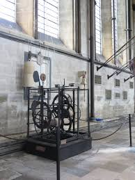

Transformando e inovando com EdTech's
Por Lucas Lorenço Alves
Atualizado em Dez/2023
O REAA constitui-se como um recurso valioso para estudantes acadêmicos e profissionais da área de tecnologia. A estruturação paginada deste trabalho reflete meu interesse em demonstrar, de maneira sucinta e clara, como utilizar o C++ para desenvolvimento em sistemas embarcados. Essa abordagem visa facilitar a compreensão do conteúdo apresentado, destacando meu conhecimento e habilidades no contexto específico."
Um pouco de reflexão
O relógio mecânico é uma obra-prima de engenharia que transende a sua função de medir o tempo, transformando-se em uma peça de arte e precisão. Deferentemente dos relógios digitais meodernos, os relógios mecânicos operam por meio de uma intricada rede de engrenagens, molas e escapamentos que convergem em uma coreografia meticulosa para manter a cadência do tempo. Cada tic-tac ressoa como um testemunho de habilidade artesanal e do conhecimento técnico empregado na sua criação.

Relógio na catedral de salisbury-Inglaterra
Acima está a imagem do relógio mecânico localizado na catadral de salisbury-Inglaterra. Um dos relógios mais antigos do mundo e ainda em funcionamento desde meados de 1386. Assista o vídeo abaixo, mostrando seu funcionameno e o mesmo som que o mecanismo faz há mais seis séculos.